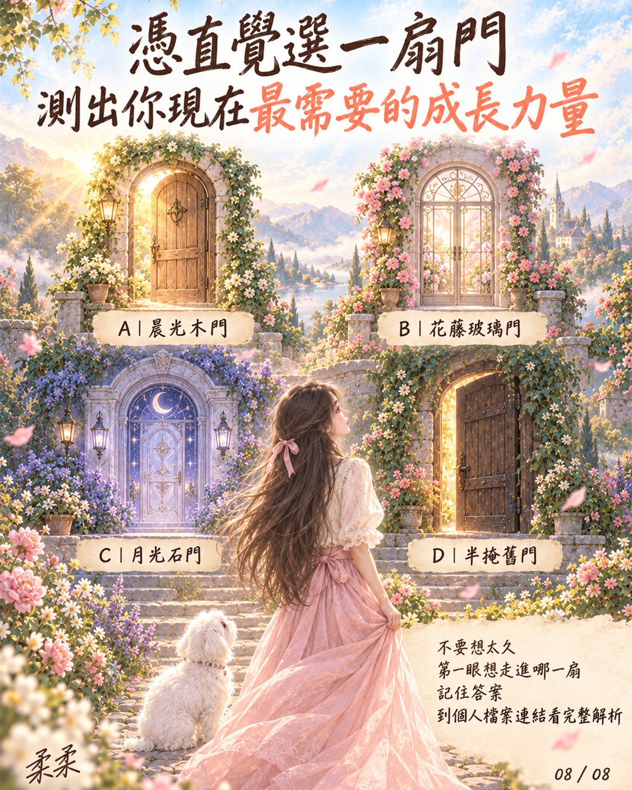

自我成長 · 心理測驗
憑直覺選一扇門
看看你現在最需要的成長力量
不用想太久
第一眼最想走進哪一扇，就選它

01 · 憑直覺選擇
哪一扇門先讓你停下來
點一下就能看到解析，不需要留下任何資料
02 · 給你的成長提醒
柔柔想跟你說
你一直都知道自己需要什麼
有時只差一個安靜的瞬間
讓那個答案被你好好聽見
自我成長 · 心理測驗
不用想太久
第一眼最想走進哪一扇，就選它

01 · 憑直覺選擇
點一下就能看到解析，不需要留下任何資料
02 · 給你的成長提醒
柔柔想跟你說
有時只差一個安靜的瞬間
讓那個答案被你好好聽見